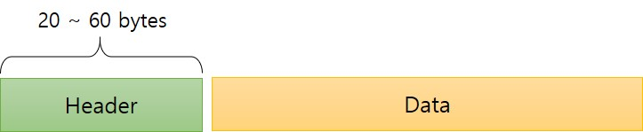

3. TCP Segment type
One of the most significant features of TCP segments is that those are developed to carry both control information and data simultaneously. This feature decreases the number of segments sent, because a segment can execute more than one operation.
3.1 Control TCP Segments
Control bits fields of the TCP header are set to indicate the communication of control information such as manipulate connection establishment, connection termination, connection abortion, flow control, mode of transfer etc.
| Subfield Name | Bits | Description |
|---|---|---|
| URG | 1 | Urgent pointer. This bit is responsible to be forwarded to the application layer urgently, even if there is more data left to be forwarded. This pointer notifies the receiver to process the urgent packets before any other packets. The receiver gets notified when packets have been received by the receiver. |
| ACK | 1 | Acknowledgement number. When set to 1, denotes that this segment has an acknowledgment, and carrying the next sequence wanted from the destination of this segment. |
| PSH | 1 | Request for push. It allows the application to send the data even if the buffer is not full. when set to 1, indicates that the TCP pushes the data immediately. |
| RST | 1 | Reset the connection. If the sender encountered a problem with the TCP connection, It is used to terminate the connection. This can be sent from the receiver’s side when a packet is sent to a wrong address or host. |
| SYN | 1 | Synchronize sequence numbers. This segment is a request to synchronize sequence numbers and establish a connection; This bit contains the sequence number of the first byte sent. |
| FIN | 1 | Terminate the connection. This bit is used to request the termination of the connection. Applications use FIN bit to close the TCP connection in one direction to terminate the connection. |
3.2 Data TCP Segments
The TCP segment consists of the TCP header that is referred to as "segment header", and the payload, data, or "segment data of various size".
The Picture 3-1 shows that a TCP segment which contains the real bytes of data being sent between devices and the data offset field indicates the start position of the data is offset from the beginning of the TCP segment simultaneously.
